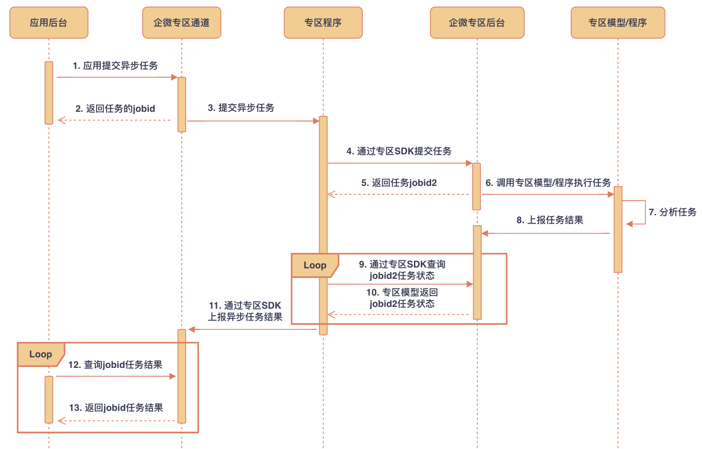

目录
调用流程

权限说明
| 应用类型 | 权限要求 |
|---|---|
| 自建应用 | 需具备「数据与智能专区权限」 |
| 代开发应用 | 需具备「数据与智能专区权限」 |
| 第三方应用 | 需具备「数据与智能专区权限」 |
请求方式： POST（HTTPS）
请求地址： https://qyapi.weixin.qq.com/cgi-bin/chatdata/async_program_task?access_token=ACCESS_TOKEN
请求包体：
{ "program_id": "xxx", "ability_id": "xxx", "request_data": "{\"input\":\"xxx\"}" }点击复制
参数说明：
| 参数 | 是否必须 | 说明 |
|---|---|---|
| program_id | 是 | 应用关联的程序id |
| ability_id | 是 | 程序关联的能力id |
| request_data | 是 | 请求的输入JSON，要求与配置的格式匹配 |
返回结果：
{ "errcode": 0, "errmsg": "ok", "jobid": "JOBID" }点击复制
参数说明：
| 参数 | 说明 |
|---|---|
| errcode | 错误码 |
| errmsg | 错误码说明 |
| jobid | 任务id |
请求方式： POST（HTTPS）
请求地址： https://qyapi.weixin.qq.com/cgi-bin/chatdata/async_program_result?access_token=ACCESS_TOKEN
请求包体：
{ "jobid": "JOBID" }点击复制
参数说明：
| 参数 | 是否必须 | 说明 |
|---|---|---|
| jobid | 是 | 任务id |
返回结果：
{ "errcode": 0, "errmsg": "ok", "response_errcode": 0, "response_data": "{\"output\":\"xxx\"}" }点击复制
参数说明：